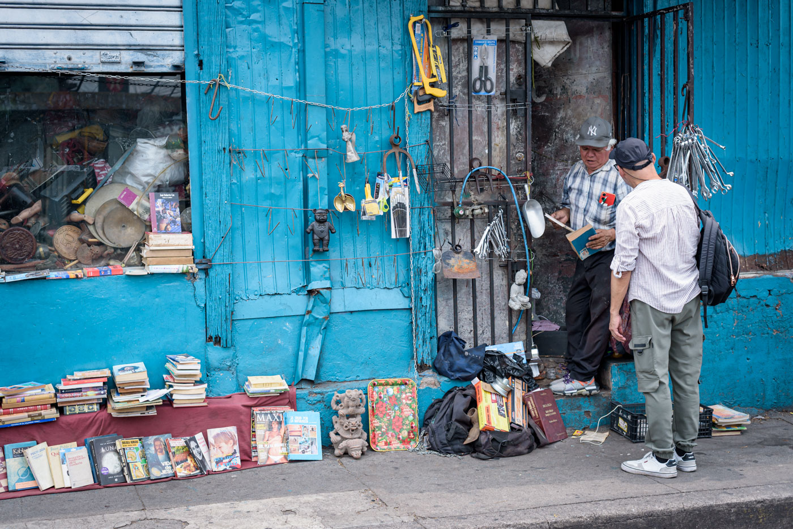
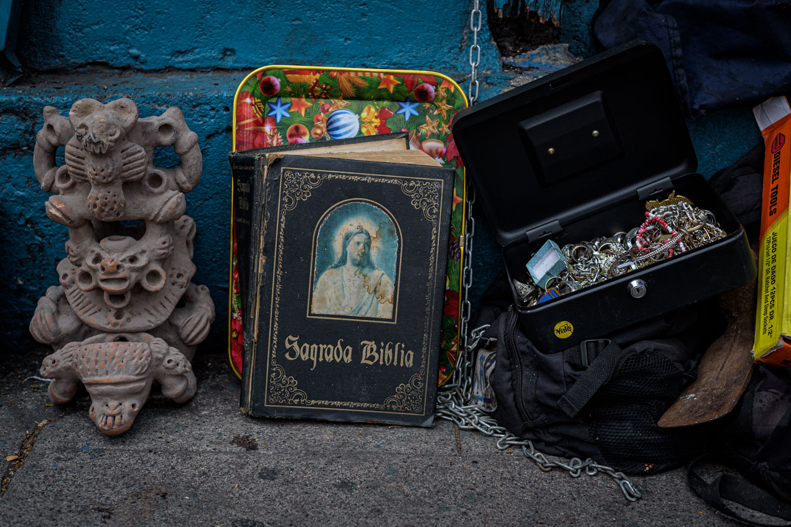
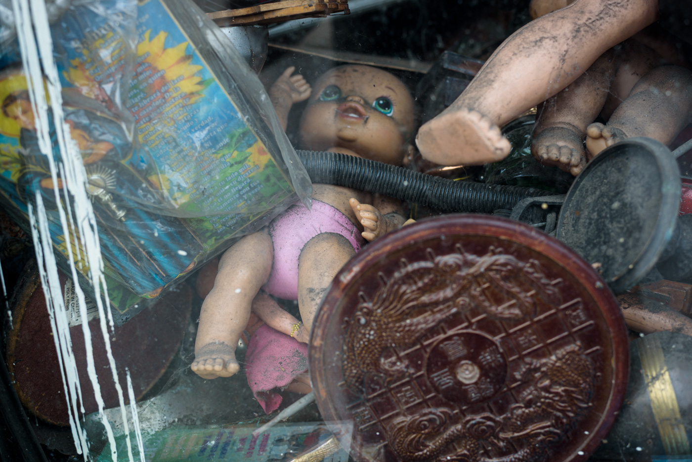
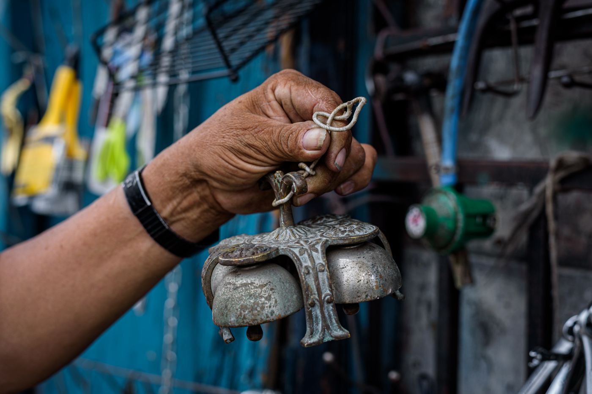
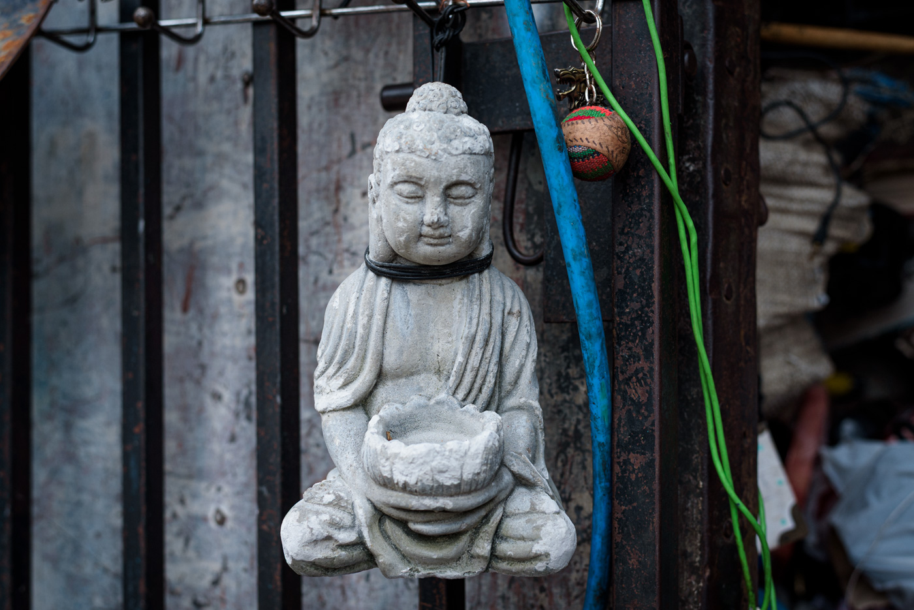

El hombre que vive donde termina una ciudad y empieza la otra.
Ensayo fotográficoSábado 30 de mayo de 2026Foto y texto · Tecuani Mishpanti
Carmelo tiene 67 años y vende en la frontera. A su izquierda empieza la zona restaurada del centro histórico. A su derecha, lo que la ciudad prefiere no mostrar. Lleva años exactamente en ese borde, sin moverse hacia ningún lado.
Lo desalojaron dos veces. Primero del Parque Libertad, donde tenía un local. Después del mismo parque, donde lo había puesto la calle. Un amigo le avisó del espacio que ocupa ahora — entre la Avenida Independencia y la 1ª Calle Oriente — y ahí está. Sabe que el proyecto de reordenamiento del centro terminará por sacarlo. Mientras tanto, resiste.

Av. Independencia con 1ª Calle Oriente. El puesto de Carmelo funciona como un inventario involuntario de lo que la ciudad va soltando.
Carmelo colecciona cachivaches. Libros apilados sobre tela borgoña, herramientas colgadas en cadenas, imágenes de barro, llaves sin cerradura, muñecas sin dueño. No lo hace por pasión — o no solo por eso. Todo lo que alguien suelta termina en sus manos. Sus clientes vienen buscando lo que el mundo olvidó: monedas coleccionables, alguna joya literaria extraviada, el objeto que ya no existe en ninguna otra parte.
Roque Dalton los llamó los vendelotodo. Hombres que comercian con los restos del mundo.
Roque Dalton


Entre todo lo que tiene apilado, las campanillas llaman la atención. Son las del sanctus — las que anuncian que la misa ha llegado a su momento más sagrado. Cómo llegaron a sus manos es parte de esa lógica invisible que rige el mercado informal: alguien las soltó, alguien más las recogió, y ahora cuelgan entre llaves inglesas y tijeras oxidadas. Lo sagrado y lo desechado comparten espacio sin contradicción.
Dice saber que no se volverá rico. Esto cubre sus gastos y los de su hijo. Lo demás — el riesgo del desalojo, la incertidumbre de cada semana — es parte del trato que nadie firmó pero todos conocen.

Sobre el pavimento: figuras de barro de factura prehispánica, una Sagrada Biblia de tapa negra, una caja de bisutería encadenada. El sincretismo como inventario.
En el suelo, junto a la puerta azul, las figuras de barro son las que detienen la mirada. Rostros que repiten una forma antigua, apilados junto a una Sagrada Biblia de tapa negra y una caja de joyas asegurada con cadena. Nadie los puso ahí con intención museográfica. Están ahí porque así llegaron, porque así los dejó alguien, porque el puesto de Carmelo es un archivo sin archivista.

El interior del escaparate. Una muñeca, una estampa de san Miguel, un plato chino de latón. Lo que la ciudad suelta cuando ya no sabe qué hacer con ello.
Dos veces lo sacaron. Dos veces volvió. Sigue aquí, en el borde exacto donde la ciudad decide qué merece ser restaurado y qué merece ser removido. Carmelo no pertenece a ninguno de los dos lados de esa línea. Lleva años en la frontera, sin moverse hacia ningún lado, vendiendo los restos de lo que los demás ya no quieren guardar.